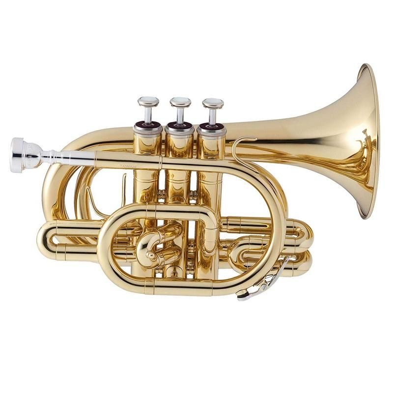
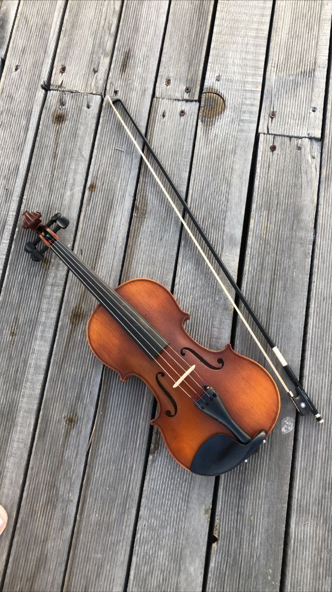
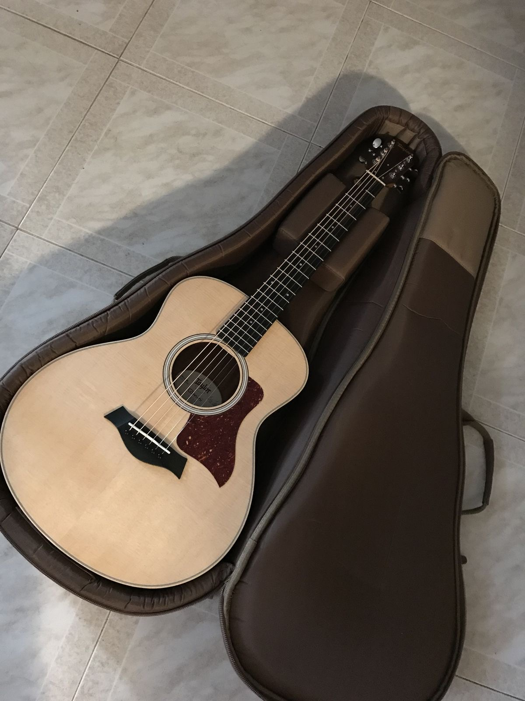
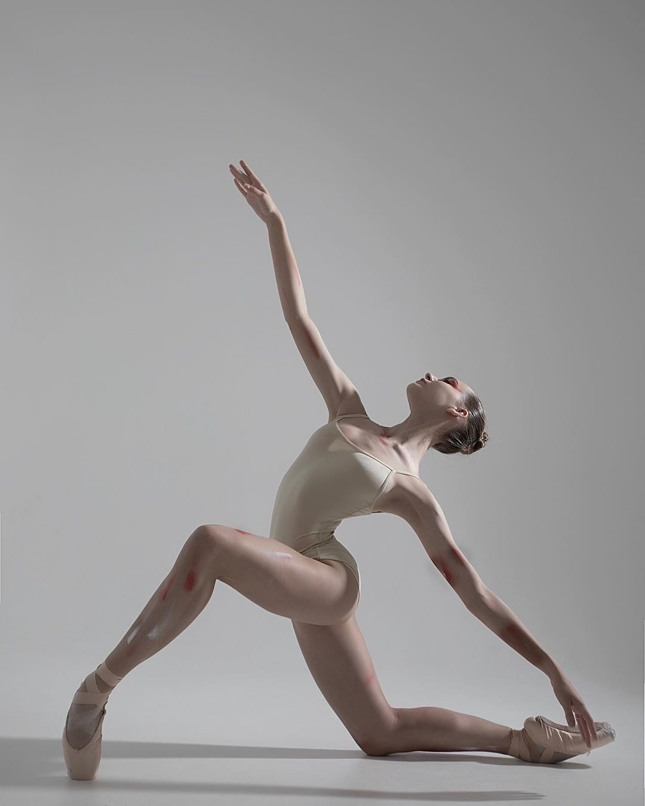
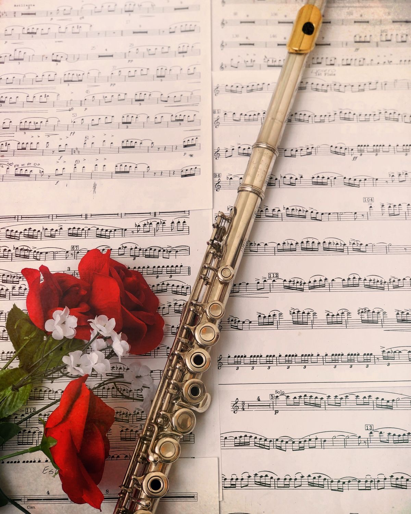

Muzički odsjeci
Klarinet
Klarinet pripada porodici drvenih duvačkih instrumenata, koji je najčešće upotrebljavan u solističkim izvedbama, kamernim, jazz sastavima i simfonijskim orkestrima, gdje mu se često dodjeljuju istaknute uloge.Klarinet se sastoji od pet dijelova, koji se uvlače jedan u drugi, a početni dio je usnik sa pričvršćenom trskom koja vibrira strujanjem zraka, te tako nastaje ton. Na cijevi se nalazi veliki broj rupica, od kojih se jedan dio pokriva jagodicama prstiju, a ostali poklopcima (tkz. klapnama), koje se pokreću složenim sustavom poluga.

Truba
Truba kao instrument koristi se u svim žanrovima muzike i u svim zemljama svijeta. Kroz vijekove se koristila kako u ratu tako i u mirnim vremenima, te na službenim festivalima i ceremonijama otvaranja sviranjem fanfara. Kao predmetni instrument u Osnovnoj muzičkoj i baletskoj školi „Novo Sarajevo“ izučava se od 2005. godine.
Violoncelo
Violončelo ili cello je tenor glas u gudačkoj porodici. Oblikovan je kao i violina samo je puno veći i drži se među koljenima. Raniji pretci instrumentu su bili držani na ramenu ili su bili vezani za remen i visili oko vrata. Legenda kaže da je jedan gospodin popularizirao drveni blok kako bi podupro svoje violončelo na tlu i ostalo je historija. Prvi poznati graditelj violončela bio je Andrea Amati, učitelj svjetski poznatog graditelja instrumenata Antonia Stradivaria.

Harmonika
Harmonika je aerofoni instrument s metalnim jezičcima, a smatra se da je Friedrich Buschmann iz Berlina napravio prvi model harmonike daleke 1822. godine. Školovanje na Odsjeku harmonike traje 6 godina a nastava se izvodi individualno sa svakim učenikom dva puta sedmično. Na odsjek harmonike upisuju se učenici nakon što zadovolje kriterije prijemnog ispita.

Klavir
Pored glavnog predmeta Klavir, učenici pohađaju i Solfeggio, a u trećem razredu uvodi se i Skupno muziciranje, te se učenici raspoređuju u skladu sa njihovim predispozicijama. Učenici se upisuju u muzičku školu po završenom trećem razredu osnovne škole, a u slučaju iznimno nadarenih učenika i ranije. Učenici i nastavnici klavira osvajaju brojne nagrade i priznanja.

Violina
U magičnom kraljevstvu muzike vlada jedna kraljica, a njeno ime je VIOLINA. Veličinom najmanja, a opsegom najviša članica porodice gudačkih instrumenata. Veoma je popularna i tražena, pogotovo kod djece mladeg uzrasta. Može da dočara najrazličitija raspoloženja i ujedno pruža mnoge mogućnosti izraza kroz solo, kamerno ili orkestarsko muziciranje.
Gitara
Ovaj svestrani instrument se koristi u svim muzičkim žanrovima, u svakom kutku svijeta. Sa svojih šest žica stoljećima inspiriše i oplemenjuje, budi maštu, rasplamsava ljubav prema umjetnosti i lijepom. No, možda i najveća prednost gitare je ta, što se za relativno kratko vrijeme mogu savladati osnove sviranja.
Balet
Klasični balet kao plesna umjetnost djeluje odgojno na cjelokupni razvoj i ličnost djeteta, a obrazuje buduće baletske plesače i poznavaoce plesne i muzičke umjetnosti. Klasični balet kod učenika razvija izvođačku tehniku, izražajnost, eleganciju pokreta, pravilan stav tijela i hod, koordinaciju pokreta, snagu, samopouzdanje, inteligenciju, kreativnost i ljubav prema plesu i muzici.
Flauta
Flauta, virtuozni instrument, laganog, prozračnog, “lepršavog” zvuka, sličan pjevu ptica, pripada skupini drvenih puhačkih instrumenata. Njen mekan i melodičan zvuk može oduševiti naše uši, omekšati srce i izazvati najljepše osjećaje. Niti jedan drugi instrument, od svog postanka pa do danas, nije prošao takve transformacije i poboljšanja.
